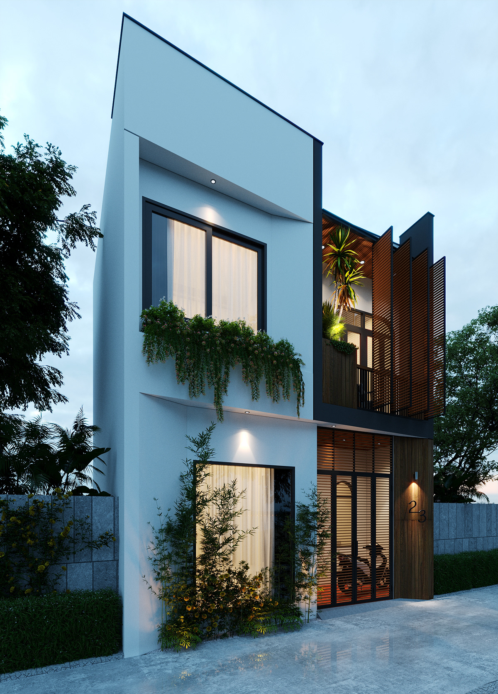

Từ khảo sát, concept đến thi công hoàn thiện, Sleeper theo đuổi quy trình rõ ràng để mỗi công trình vừa đẹp vừa khả thi.

01
Triết lý làm việc
"Thiết kế tốt không dừng ở phối cảnh đẹp, mà phải đi được đến công trình thật."
Sleeper xem quy trình là phần cốt lõi để giữ cho ý tưởng, chi tiết và chất lượng thi công đi cùng nhau một cách nhất quán.
02
Quy trình triển khai
Khảo sát kỹ, thiết kế đồng bộ, thi công chỉn chu.
03
Phạm vi dịch vụ